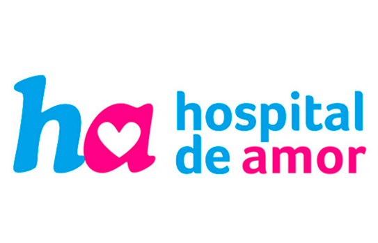
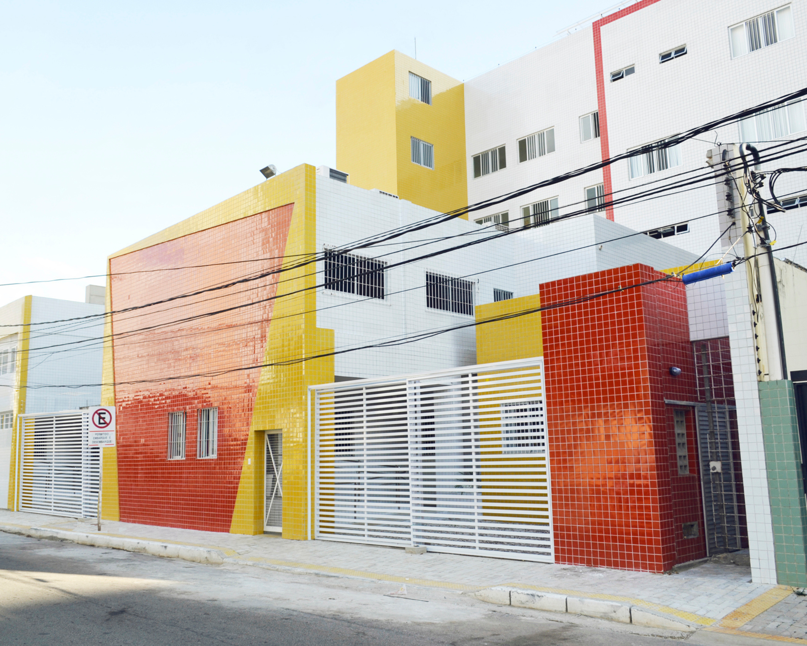
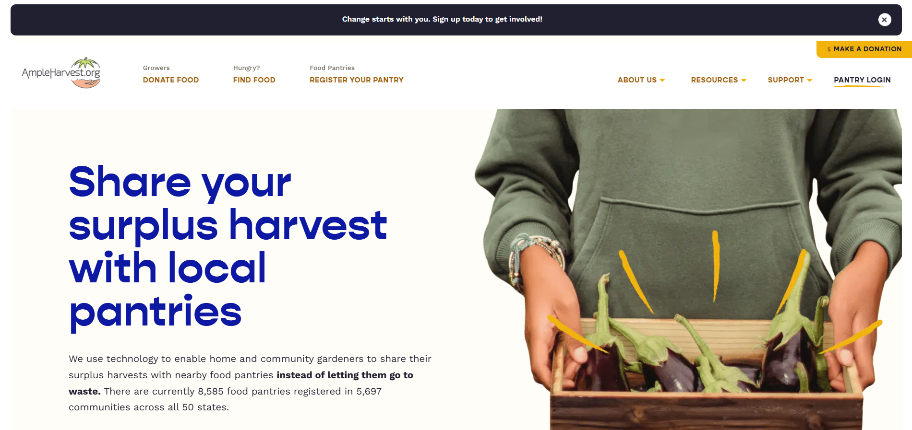

Instituições que transformam vidas
Conheça iniciativas que fazem a diferença.

Casa Durval Paiva
Apoio a crianças e adolescentes em tratamento contra o câncer.
Conheça a instituição
Banco de Alimentos
Iniciativas de combate ao desperdício e à insegurança alimentar.
Conheça a instituição
One more child
A One More Child é uma organização humanitária cristã que ajuda crianças vulneráveis e famílias em dificuldades, oferecendo alimentação, acolhimento, apoio a mães solteiras e proteção contra o tráfico humano. Seu objetivo é transformar vidas por meio da solidariedade, do cuidado e da esperança.
Conheça a instituição
Food for the Hungry
uma organização humanitária cristã que combate a pobreza e a fome mundial. A instituição apoia comunidades vulneráveis por meio de alimentos, água potável, saúde, educação e capacitação profissional, buscando promover mudanças duradouras na vida de crianças e famílias.
Conheça a instituição
AmpleHarvest
O AmpleHarvest.org é uma iniciativa social que conecta hortas comunitárias e agricultores a bancos de alimentos, facilitando a doação de alimentos frescos excedentes para pessoas em situação de insegurança alimentar.
Conheça a instituição